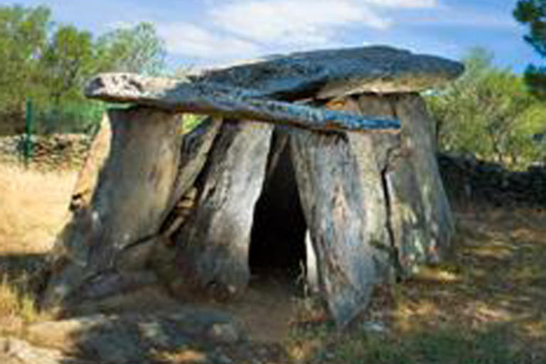

Visita · Roses
(3.000-2700 aC) Bé Cultural d’Interès Nacional Us convidem a fer un viatge en el temps: en pujar per la carretera de Montjoi, dins del Parc Natural de Cap de Creus, trobareu les restes dels…